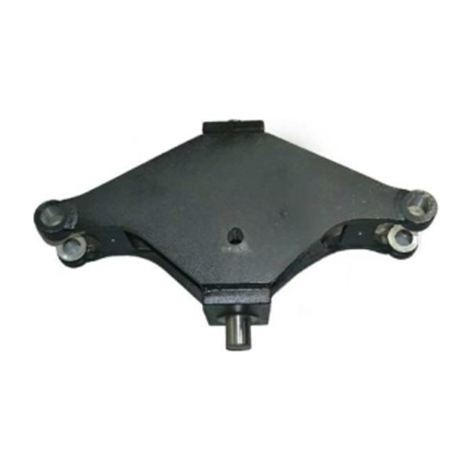

Parts › Transmission & Drive Axle › 40755-401

Available
Email for a quote
Nichiyu 40755-401 Rear Axle
| OEM part number | 40755-401 |
| Fits | Nichiyu |
| Models / notes | FB20.25P-70/72S |
| Category | Transmission & Drive Axle |
| Type | Aftermarket replacement |
Send us the quantity you need and we'll reply with pricing, usually within 24 hours. Not the exact part? We can source it. Send the part number or a photo.